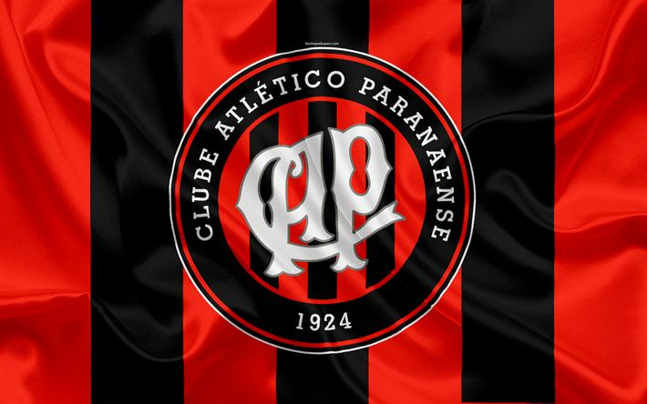
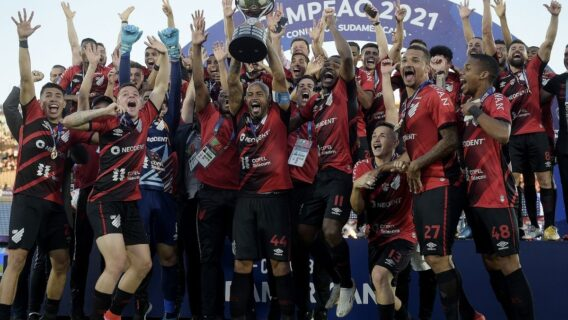
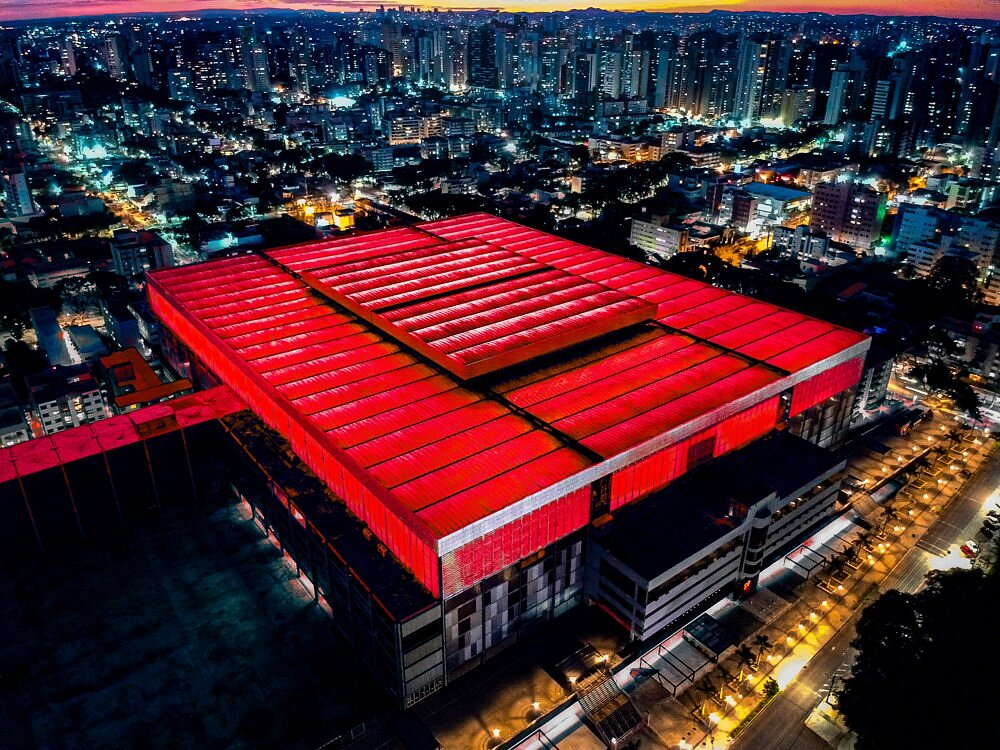
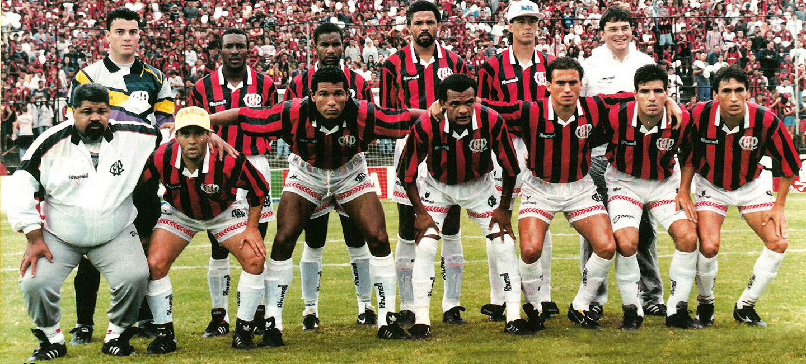
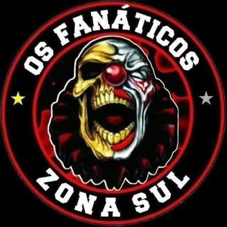
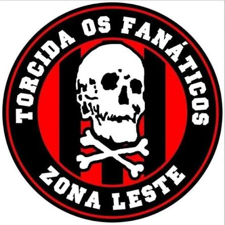
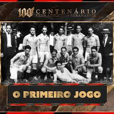
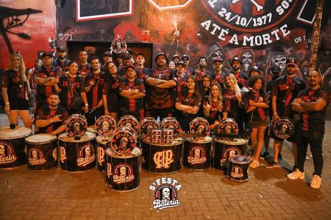

Vamos falar sobre o Athletico Paranaense, é contar a história de uma das maiores metamorfoses do futebol brasileiro. O clube deixou de ser uma força regional para se transformar em um gigante continental, conhecido pela sua gestão exemplar, inovação e pela temida Arena da Baixada.
O ano de 1949 é um divisor de águas místico na história do clube. O Athletico montou um esquadrão ofensivo avassalador para a disputa do Campeonato Paranaense. Sob o comando do mestre Caju (Alfredo Gottardi) no gol e um ataque cirúrgico, o time aplicou goleadas impiedosas em quase todos os adversários. Foram 12 jogos, com 10 vitórias seguidas. O time marcou 49 gols naquela campanha — uma média impressionante de mais de 4 gols por partida. O jornalista Silveira Filho, impressionado com a forma catastrófica (para os rivais) com que o time destruía as defesas paranaenses, escreveu em suas crônicas que o Athletico jogava como um "Furacão". O apelido colou imediatamente na alma da torcida e virou a própria identidade do clube.

Após o impacto de 1949, o clube viveu décadas de altos e baixos. O Coritiba dominou o cenário estadual nos anos 70, e o Athletico passou por graves crises financeiras, chegando a ficar longos períodos sem erguer taças (como o jejum entre 1970 e 1982). Contudo, a paixão da torcida se manteve acesa por lampejos de genialidade. O maior deles atende pelo nome de Barcímio Sicupira, o "Deus da Raça", que jogou entre as décadas de 60 e 70, tornando-se o maior artilheiro da história do clube com 158 gols. Em 1983, o Athletico montou um time histórico para o Campeonato Brasileiro. Liderado pela dupla Washington e Assis (conhecidos nacionalmente como o "Casal 20"), o Furacão encantou o país e chegou até as semifinais do Brasileirão, sendo eliminado pelo Flamengo de Zico em um Maracanã com mais de 100 mil pessoas. Era a prova de que o Athletico tinha tamanho para incomodar o eixo tradicional do futebol brasileiro da época. Eles entenderam que, para vencer no campo, era preciso primeiro vencer fora dele.Essa nova gestão tratou o futebol como negócio de ponta. O Athletico iniciou uma revolução estrutural sem precedentes no país, que incluiu a construção do CT do Caju e a modernização completa do estádio Joaquim Américo. A resposta esportiva foi imediata: ainda em 1995, o clube conquistou a Série B do Brasileirão, iniciando uma escalada que transformaria o antigo clube regional em uma das maiores potências continentais do século XXI.
Se existe um ano que divide o Athletico entre o "antigo" e o "moderno", esse ano é 1995. Em 1994, o clube sofreu uma de suas maiores humilhações: uma derrota por 5 a 1 para o rival Coritiba, que mergulhou o clube em uma crise institucional. Foi então que um grupo de empresários e torcedores, liderados por Mario Celso Petraglia, assumiu o clube com uma mentalidade totalmente disruptiva para os padrões do futebol brasileiro da época. Eles entenderam que, para vencer no campo, era preciso primeiro vencer fora dele. A revolução começou de fora para dentro, tratando o clube de futebol como uma empresa de ponta. Sob o lema de "Demolição", a nova diretoria liderada por Petraglia rompeu com o amadorismo e colocou em prática um plano estratégico audacioso focado em três pilares: infraestrutura moderna, finanças saneadas e valorização da marca. O antigo estádio Joaquim Américo foi colocado abaixo para dar lugar aos primeiros passos da moderna Arena da Baixada, enquanto o terreno para o futuro CT do Caju era adquirido, criando a base para o que viria a ser uma das melhores estruturas de formação do mundo.O reflexo dessa mentalidade inovadora dentro de campo não tardou a aparecer. Ainda naquele emblemático ano de 1995, o Athletico montou um time competitivo e avassalador que conquistou o Campeonato Brasileiro da Série B, carimbando o retorno definitivo à elite nacional com o apoio de uma torcida totalmente resgatada e orgulhosa.Aquela virada de chave em 1995 não foi apenas uma recuperação após a goleada sofrida para o rival; foi a fundação do Athletico contemporâneo. O ano plantou as sementes que transformaram um clube outrora regional na potência global do século XXI — abrindo caminho para o título do Brasileirão de 2001, o bicampeonato da CONMEBOL Sul-Americana, a Copa do Brasil e a consolidação de uma marca inovadora e respeitada em toda a América do Sul.
O cartola exerce o cargo de Presidente do Conselho Administrativo do Athletico Paranaense, liderando o mandato atual que se estende até o final de 2027.
O time foi rebaixado para a Série B, mas em 1995, com uma campanha avassaladora e o surgimento do atacante Oséas, o Athletico foi campeão da Série B.
O clube vendeu ativos, profissionalizou todos os departamentos e iniciou a construção do CT do Caju Centro de Treinamentos Alfredo Gottardi, que se tornaria um dos mais modernos do mundo, focado na formação de atletas.

O antigo e acanhado estádio Joaquim Américo foi demolido para dar lugar à primeira versão da Arena da Baixada moderna, inaugurada em 1999 como o estádio mais moderno da América Latina na época.
Sob o comando de Geninho, o Athletico montou um time vertical, veloz e técnico na formação $3-5-2$. Contava com a liderança do zagueiro Nem, a classe de Kleberson no meio-campo e o faro de gol da dupla Kleber Pereira e Alex Mineiro.Na fase final, o Athletico eliminou o São Paulo e o Fluminense.Na grande final, enfrentou o surpreendente São Caetano. No jogo de ida, na Arena da Baixada, um épico 4 a 2 para o Furacão. Na volta, no ABC Paulista, Alex Mineiro coroou sua fase iluminada marcando o gol da vitória por 1 a 0. O Athletico Paranaense era Campeão Brasileiro.
Em 2004, o Athletico praticou o futebol mais vistoso do país. Liderado por Washington "Coração de Leão" (que bateu o recorde histórico de gols em uma única edição do Brasileirão, com 34 gols) e pelo meia Jadson, o clube liderou boa parte do campeonato de pontos corridos, terminando como vice-campeão após uma disputa acirrada com o Santos.
O Athletico entendeu que o próximo passo era o continente. Embora tenha batido na trave na final da Libertadores de 2005 (perdendo para o São Paulo após ser impedido de jogar a partida de ida em seu próprio estádio por regras de capacidade da CONMEBOL), o clube continuou batendo à porta dos torneios internacionais.
Treinado por Tiago Nunes, o Athletico reencontrou o futebol ofensivo e envolvente. Com um elenco que misturava a experiência de Lucho González e Thiago Heleno com a juventude de Renan Lodi, Bruno Guimarães e o talento de Nikão e Pablo, o time atropelou gigantes continentais (como o Peñarol e o Fluminense) até chegar à final contra o Junior Barranquilla. O título veio nos pênaltis em uma Arena da Baixada pulsante.
O ano de 2019 consolidou o Athletico como o "rei das copas". Eliminando Flamengo (em pleno Maracanã) e Grêmio, o Furacão enfrentou o Internacional na final. Venceu por 1 a 0 em Curitiba e deu um show tático no Beira-Rio, vencendo por 2 a 1 com direito à jogada mágica e histórica de Marcelo Cirino de calcanhar nos acréscimos.
No final de 2018, o clube mudou sua identidade visual. Adotou oficialmente o "H" no nome (Athletico) para resgatar as origens de 1924 e modernizou seu escudo com quatro faixas diagonais que representam o furacão e o crescimento do clube. Em 2021, já com a nova identidade consolidada, o clube repetiu a dose na América. Em uma final em jogo único em Montevidéu, o Athletico derrotou o Red Bull Bragantino por 1 a 0 com um golaço de voleio de Nikão, tornando-se o primeiro clube brasileiro bicampeão da Copa Sul-Americana. Em 2022, o Furacão alcançou novamente a final da Copa Libertadores da América, eliminando o então campeão Palmeiras nas semifinais, mas acabou superado pelo Flamengo na finalíssima em Guayaquil.

.jpeg)
"Os Fanáticos" foi fundada em 24 de outubro de 1977 por um grupo de jovens torcedores apaixonados pelo clube. A estreia oficial da torcida aconteceu no Estádio Couto Pereira (já que a Arena da Baixada passou por períodos de reforma e desuso no século passado), em um jogo contra o Brasília. Naquela partida, eles estenderam sua primeira faixa: inteira preta com letras brancas. No entanto, o nascimento da organizada reservava um encontro do destino nas arquibancadas do estádio rival. Enquanto o grupo fundador estendia aquela primeira e modesta faixa preta, outro grupo de jovens atleticanos surgiu no mesmo setor com mais bandeiras e uma faixa própria onde se lia "Torcida Jovem". Em vez de rivalizarem, os líderes dos dois lados conversaram e, em um pacto de união pelo amor ao Rubro-Negro, decidiram fundir os movimentos ali mesmo, adotando em definitivo o nome Torcida Os Fanáticos.Com o passar dos anos, a organizada deixou de ser apenas um grupo de apoio para se tornar o coração pulsante do clube. Foi a TOF quem ajudou a ditar o ritmo da Baixada, transformando o estádio no temido "Caldeirão". A adoção da icônica Caveira como símbolo máximo reforçou a identidade de uma torcida vibrante, que não abandonou o clube nos momentos de jejum e foi combustível essencial para as grandes conquistas nacionais e internacionais que viriam a partir da virada do século.
Historicamente considerado um dos comandos mais populosos e ativos da torcida. Abrange grandes redutos atleticanos como o Xaxim, Boqueirão, Sítio Cercado, Hauer e Pinheirinho

Responsável por aglutinar os torcedores de bairros como Boa Vista, Santa Cândida, Bacacheri e Cabral, coordenando frentes integradas nessa porção da capital.
.jpeg)
Reúne a força da torcida em bairros como Campo Comprido, CIC e arredores.
.jpeg)
Concentra os membros de regiões como o Cajuru, Centenário e Jardim das Américas.

Subdivisões fortes focadas em cidades vizinhas como São José dos Pinhais, Colombo, Araucária, Fazenda Rio Grande, Pinhais e Piraquara.

Formado por mulheres que buscam maior espaço, integração e voz na arquibancada. Elas organizam suas próprias caravanas, confeccionam materiais específicos e se posicionam ativamente na liderança de cantos e ações sociais.

O coração pulsante que dita os cantos e o ritmo da festa na arquibancada. Embora não seja um comando regional, funciona como um corpo de elite técnico e altamente coordenado no centro do setor.
Grupos que reúnem lideranças históricas, fundadores e membros antigos que ditam as diretrizes e preservam a ideologia tradicional criada em 1977.